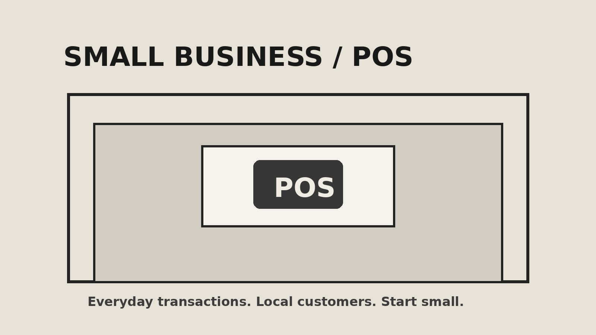

08 / Articles
Ideas worth sharing.
Writing about business, entrepreneurship, people and Nigeria's development.
01 / Featured
5 Businesses You Can Start in Nigeria With Less Than ₦100,000
A practical look at low-capital ideas, what you need to begin and the lessons that matter more than starting capital.
Read article →